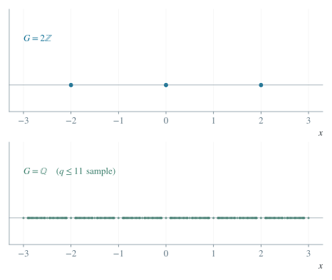

数学 / 函数与导数
周期集合与实数的加法子群
把逐个寻找周期转化为研究全部允许平移的代数结构。
1 定义与记号
设 非空，。定义周期集合 。零平移包括在集合内，但不称为非零周期。函数周期性是 。本条使用复值函数，实值函数是其特例。
2 命题与定理
是实数加法群的子群：含零、对加法和取负封闭。在 时， 当且仅当 是常值函数。任意加法子群 恰有三种可能：、某个 的整数倍集合 ，或在实轴上稠密。
3 证明
3.1 验证平移运算的封闭性
零平移保持定义域与函数值。若 是周期，将 代入等式；定义域平移不变保证代入合法，于是 ，故 是周期。若 是周期，两次平移得 ，且 。
3.2 证明周期全体为实数时必为常值
固定 。对任意 ，取周期 ，便有 。常函数的反向结论直接来自定义。这个论证要求全实轴定义域。
3.3 分类任意加法子群
若 ，取 。若 ，由下确界定义可取 且 。充分大的 有 ；这个差属于 ，若非零就违反 是正元素下界，故这些 最终相等，极限 属于 。
任取 ，作实数的带余除法 ，、。因 ，只能 ，所以 。
若 ，对任意开区间 取 、。整数 满足 ，故该区间含 的元素。这就是稠密性。
4 例题与解答
4.1 一个稠密但不是全实轴的周期集合
令 （），（）。有理平移保持有理性与无理性，所以 。若 无理， 而 ，故 。因此 ，没有最小正周期。
4.2 给定任意加法子群构造周期集合
设 是加法子群，定义 （），（）。若 ，则 当且仅当 ，故 是周期。
反过来，若 是周期，由 得 ，所以 。因此 。取 得无非零周期的例子；取 得最小正周期二；取 得稠密而没有最小正周期的非恒定函数。

有相邻点间距； 的有限取样只能示意，不能把稠密集合误画成离散点集。
5 适用条件与辨析
稠密并不等于全部实数。上例不连续，不能由周期稠密推出函数常值；下一条将说明连续性如何改变结论。若定义域不是整个实轴，常值函数的周期仍受定义域约束，例如 定义在 上时 。